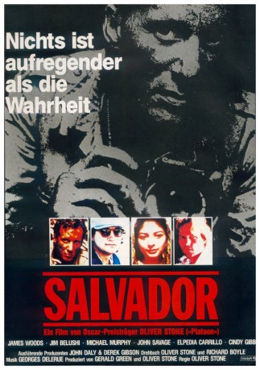

#10276 Salvador
Auszeichnungen: für 2 Oscars nominiert
 
 IMDB-Wertung: 7.5 / 10
IMDB-Wertung: 7.5 / 10  Tomatometer: 88
Tomatometer: 88  Metascore: 0
Metascore: 0 
El Salvador im Jahr 1980: Junge Männer, Frauen und Kinder werden während des Bürgerkriegs in dem zentralamerikanischen Staat getötet. Das ganze Land ist ein Ort des Schreckens - außer für Richard Boyle, einen heruntergekommener Kriegsfotografen, der El Salvador als Chance sieht, um seiner Karriere den nötigen "Kick" zu geben. Als er herausfindet, dass der US-Geheimdienst den Krieg unterstützt, gerät er zwischen die Fronten und versucht, sich und seine einheimische Frau in Sicherheit zu bringen.
Jahr: 1986
Dauer: 122 Minuten
FSK: 16
Land: England Studio: Jugendfilm-VerleihTonspuren:
Untertitel: Deutsch,
Auflösung: 1080p (1920x1040) Größe: 10956 MB
Genre: Thriller, Drama, Krieg, Geschichte
Regisseur:  Oliver Stone
Oliver Stone
Drehbuch: Oliver Stone, Richard Boyle
Soundtrack: Georges Delerue
Darsteller:
 James Woods als Richard Boyle
James Woods als Richard Boyle Jim Belushi als Dr. Rock
Jim Belushi als Dr. Rock Michael Murphy als Ambassador Thomas Kelly
Michael Murphy als Ambassador Thomas Kelly John Savage als John Cassady
John Savage als John Cassady Elpidia Carrillo als María
Elpidia Carrillo als María Tony Plana als Major Max
Tony Plana als Major Max- Colby Chester als Jack Morgan
 Cynthia Gibb als Cathy Moore
Cynthia Gibb als Cathy Moore- Will MacMillan als Col. Hyde
 Valerie Wildman als Pauline Axelrod
Valerie Wildman als Pauline Axelrod- José Carlos Ruiz als Archbishop Romero
 Jorge Luke als Col. Julio Figueroa
Jorge Luke als Col. Julio Figueroa Juan Fernández als Army Lieutenant
Juan Fernández als Army Lieutenant- Salvador Sánchez als Human Rights Leader
- Rosario Zúñiga als HIS Assistant
- Ramón Menéndez als Major Max Assistant
 John Doe als Roberto, Restaurant Owner
John Doe als Roberto, Restaurant Owner- Roberto Sosa als Rebel Youth
- Ty Granderson Jones als Landlord San Francisco
 Sean Stone als Boyle's Baby
Sean Stone als Boyle's Baby- Art Bonilla als Romero Assassin
- Gerardo Zepeda als Death Squad #1
- Agustín Bernal als Bodyguard to Major Max
 Bill Hoag als 2nd Immigration Officer
Bill Hoag als 2nd Immigration Officer Jimmy Carter als Himself (archive footage) (uncredited)
Jimmy Carter als Himself (archive footage) (uncredited)- Robert Gallo als Voice (uncredited)
- Nancy Reagan als Herself (archive footage) (uncredited)
 Ronald Reagan als Himself (archive footage) (uncredited)
Ronald Reagan als Himself (archive footage) (uncredited)- Martín Fuentes als Maria's Brother
- Gary Farr als Australian Reporter
- Gilles Millinaire als French Reporter
- Leticia Valenzuela als Woman Rebel
- Daria Okugawa als Dog Attendant
- Sue Ann McKean als Cop in San Francisco
- Joshua Gallegos als Immigration Officer on Bus
- María Rubell als Boyle's Wife
- Danna Hansen als Sister Stan
- Sigridur Gudmunds als Sister Burkit
- Erika Carlsson als Sister Wagner
- Kara Glover als Kelly Assistant
- Julie Conn als WAC at Party
- María del Carmen Sánchez als Maria's Grandmother
- Nicolás Jasso als Death Squad #2
- José Chávez als Jail Guard
- Héctor Téllez als Mayor at Nun's Burial
- Jorge Reynoso als Jefe at Customs Shed
- Jorge Pol als 2nd Customs Officer
- César Sobrevals als 3rd Customs Officer
- Bruno Rubeo als 4th Customs Officer
- Bob Morones als 5th Customs Officer
Datei: X:\1986\Salvador (1986, FSK16, 1920x1040).mkv seit 27.12.2018
Festplatte: HD 1980-1986
 Es gibt insgesamt 50 Filme in der Gruppe '1986'
Es gibt insgesamt 50 Filme in der Gruppe '1986'